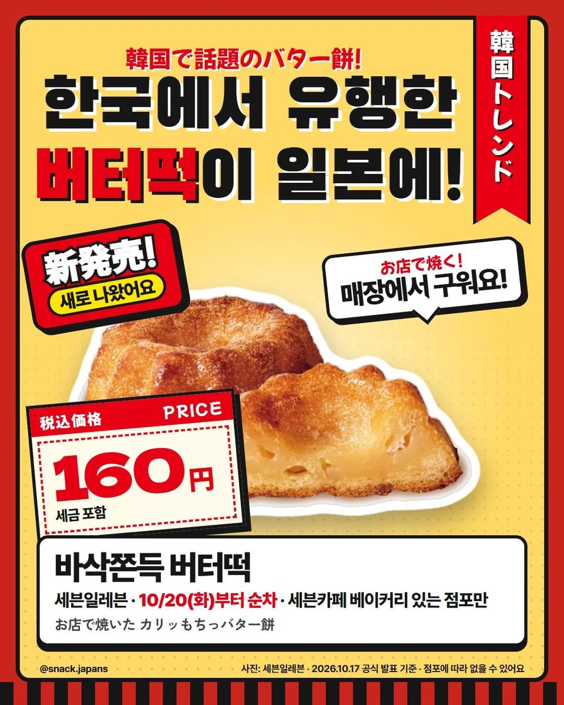
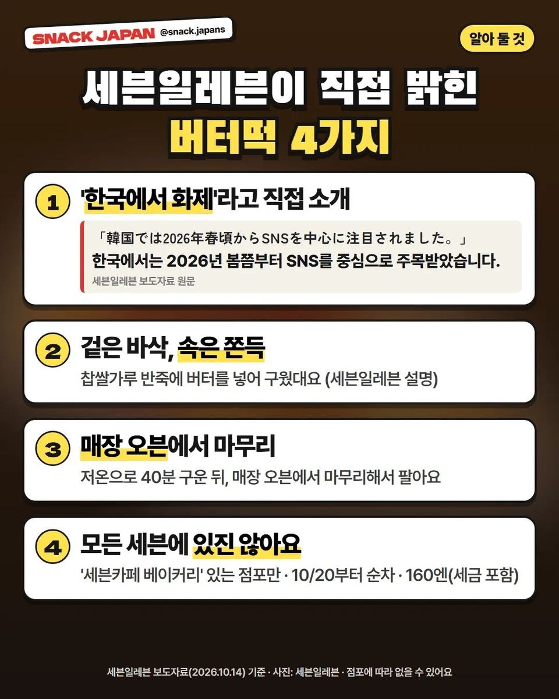
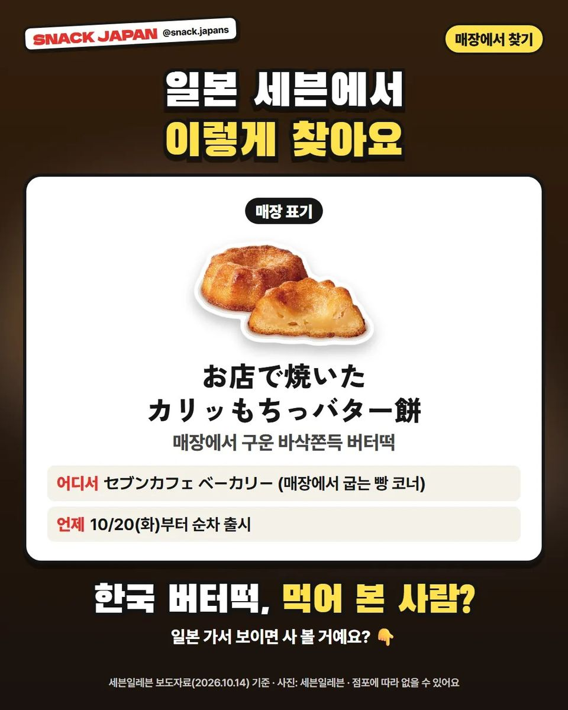

일본 세븐일레븐 버터떡 출시, 한국에서 유행한 그 버터떡이 일본에!
10/20부터 순차 출시! 매장 오븐에서 구워 파는 바삭쫀득 버터떡, 세븐카페 베이커리 있는 점포에서만 팔아요.
한국에서 유행한 버터떡,
드셔 보셨어요? 🧈
그 버터떡이 이번에
일본 세븐일레븐에 나와요!
한국 유행이 일본 편의점으로 건너가다니,
신기하지 않아요?
세븐일레븐 보도자료 기준으로 정리해 볼게요!

1. 10/20부터 순차 출시!
- 파는 곳: 일본 세븐일레븐 (세븐카페 베이커리 있는 점포만)
- 출시: 10/20(화)부터 순차
- 일본 이름: お店で焼いた カリッもちっバター餅
- 가격: 사진 카드에 정리해 뒀어요

2. 세븐일레븐이 직접 '한국에서 화제'라고 소개!
세븐일레븐 보도자료에
'한국에서는 2026년 봄쯤부터 SNS를 중심으로 주목받았다'고
직접 나와 있어요.
- 겉은 바삭, 속은 쫀득
- 찹쌀가루 반죽에 버터를 넣어 구웠대요
- 저온으로 40분 구운 뒤, 매장 오븐에서 마무리

3. 모든 세븐일레븐에 있진 않아요!
매장에서 빵을 굽는
세븐카페 베이커리(セブンカフェ ベーカリー) 코너가 있는 점포에서만 팔아요.
점포에 따라 없을 수 있어요.
4. 총평
- 추천: 한국 버터떡 좋아하는 분, 일본 편의점 신상 구경하는 분
일본 가서 세븐일레븐 들르면
빵 굽는 코너부터 한번 찾아보세요!